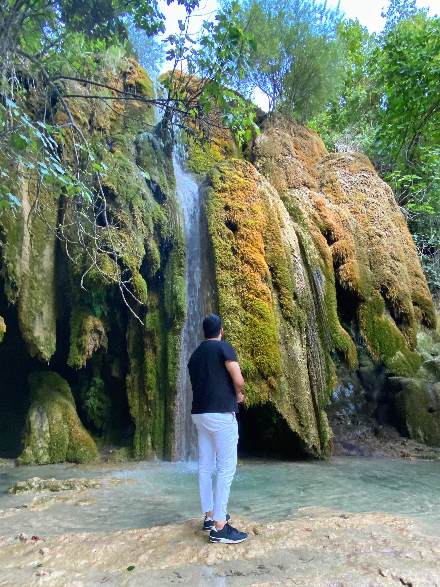

Je me présente, je m'appelle Yassin Largo, j'ai actuellement 26 ans et je suis en reconversion professionnelle dans les métiers du web. En effet, j'ai pris conscience à la fin de mon cursus scolaire que je n’étais pas fait pour le commerce, non pas parce que je n'avais pas les compétences requises, mais tout simplement, car les valeurs commerciales ne me correspondaient plus. J'ai donc par la suite intégrer une entreprise digitale, domaine dans lequel je me suis tout de suite reconnu. Le web a toujours été une passion. Ainsi, pendant plus de deux mois de confinement, j'ai pu m’exercer au code en parallèle de mon activité pratiqué à ce moment-là à distance. Plus j’apprenais et plus j’avais soif d’en apprendre d’avantage et de pouvoir réaliser ce que je souhaité et j'y ai pris goût. Donc j'ai suivi des cours sur la plateforme YouTube de Pierre Giraud qui est un développeur web. J’ai pu apprendre la base du code avec HTML5 et CSS3 sur l'éditeur Visual studio code. Puis, lorsque j'ai repris mon travail, je n’avais qu’une seule idée en tête continuer sur cette voie-là. Aujourd'hui, j'ai pu intégrer une formation en tant que développeur web et web mobile dans lequel je développe mes connaissances web. Je suis désireux d’apprendre à créer différents projets et apprendre de nouveaux langages informatiques. Voici donc un premier projet de création de site web avec l'utilisation de HTML5 & CSS3.

Ce que j'aime dans la vie, c'est avant tout de pouvoir voyager et découvrir ce que notre terre à de plus beaux à
nous offrir, c'est-à-dire la nature. Contemplée les montagnes, la forêt, les nuages ou encore les rivières et
encore d'autres merveilles que nous réserve la nature.
Je passe également mon temps libre à la lecture d'ouvrage historique, cela me permet de voyager à travers le
temps, de
m'éduquer, me cultiver.
Il est vrai qu'étant un millénial, je passe également une partie de mon temps dans l'informatique pour y
accomplir certaines tâches, telles que, des petits projets de création comme par exemple ce site web.
Pour finir cette courte histoire me concernant, je joue pas mal au foot et ceux depuis maintenant dix-sept
années qui ont étaient pour moi géniale. Il m'arrive aussi de m'essayer à la peinture et plus largement aux
activités
manuelles.